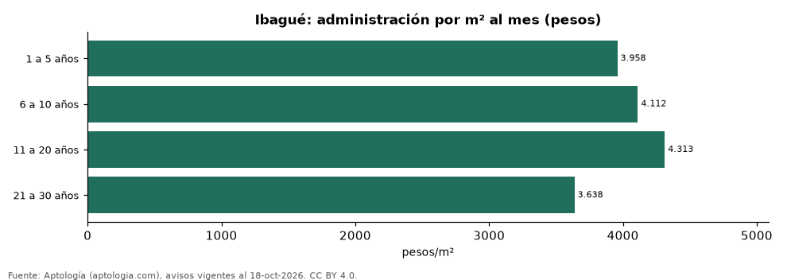

Administración en Ibagué según la antigüedad del edificio: nuevos frente a viejos (octubre 2026)
Estudio con datos abiertos (CC BY 4.0). Versión original: https://www.aptologia.com/estudios/administracion-por-antiguedad-del-edificio-ibague-2026 · DOI: 10.5281/zenodo.23522209
En Ibagué, la administración por metro cuadrado más alta se paga en edificios del grupo «11 a 20 años» (4.313 pesos por m² al mes en la mediana) y la más baja en «21 a 30 años» (3.638 pesos). Cuota mensual mediana por franja: 1 a 5 años: 303.100 pesos; 6 a 10 años: 307.000 pesos; 11 a 20 años: 385.500 pesos; 21 a 30 años: 385.500 pesos.
Resumen: analizamos la cuota de administración de 936 apartamentos de Ibagué con antigüedad declarada.
Actualizado: 18 de octubre de 2026 (datos del 18 de octubre de 2026) · Próxima actualización: mensual.

Resumen
| Indicador | Valor |
|---|---|
| 1 a 5 años | 303.100 pesos |
| 6 a 10 años | 307.000 pesos |
| 11 a 20 años | 385.500 pesos |
| 21 a 30 años | 385.500 pesos |
Administración por antigüedad del edificio
| Antigüedad del edificio | Cuota mensual (mediana) | Por m² al mes | Avisos |
|---|---|---|---|
| 1 a 5 años | 303.100 pesos | 3.958 pesos | 615 |
| 6 a 10 años | 307.000 pesos | 4.112 pesos | 173 |
| 11 a 20 años | 385.500 pesos | 4.313 pesos | 90 |
| 21 a 30 años | 385.500 pesos | 3.638 pesos | 58 |
Medianas; franjas con menos de 30 avisos se omiten.
Preguntas frecuentes
¿Los edificios nuevos pagan más administración en Ibagué? 1 a 5 años: 3.958 pesos/m²; 6 a 10 años: 4.112 pesos/m²; 11 a 20 años: 4.313 pesos/m²; 21 a 30 años: 3.638 pesos/m² (medianas por m² al mes).
¿Dónde es más barata por m²? En «21 a 30 años»: 3.638 pesos por m² al mes.
Metodología
- Fuente: exportes nocturnos de la base de datos de Aptología (aptologia.com) del 18 de octubre de 2026: avisos vigentes de vivienda en portales inmobiliarios de 13 países, recogidos por Aptología y vistos en línea entre el 11 y el 18 de octubre de 2026. Corte: 18 de octubre de 2026.
- Depuración: se eliminan duplicados exactos (misma ciudad, zona, tipo, precio, moneda, área, habitaciones y baños) y los precios fuera del percentil 1–99 de cada país, operación, moneda y tipo; el precio por m² usa solo avisos con área declarada entre 12 y 2.000 m² y también se recorta al P1–P99.
- Qué se mide: precios pedidos (publicados), no precios de cierre. En arriendo, el canon mensual sin administración, gastos comunes ni condominio.
- Muestra mínima: cada cifra publicada se apoya en al menos 30 avisos; las celdas con menos se omiten.
- Colombia: Precios en pesos colombianos, sin conversión de moneda.
- Administración: cuota mensual declarada en avisos de venta y de arriendo de apartamentos (se unen ambas operaciones porque la cuota es del inmueble, quitando repetidos con la misma ciudad, barrio, cuota, área, habitaciones y baños); se descartan cuotas por debajo de 30.000 o por encima de 6 millones de pesos y razones por m² fuera de 500–40.000 pesos.
- Limitaciones: la cobertura depende de los portales que recorre Aptología en cada país y es mayor en las ciudades grandes y en los segmentos medio-alto y alto; el área es la que declara el aviso, sin verificar; los nombres de zona vienen de los portales.
- Privacidad: solo se publican agregados; no se publica ningún dato personal, enlace a avisos ni nombre de anunciante.
- Datos abiertos: datos.csv, licencia CC BY 4.0.
Cómo citar
Pinzón Pineda, D. M. (2026). Administración en Ibagué según la antigüedad del edificio: nuevos frente a viejos (octubre 2026). Aptología (aptologia.com). https://github.com/elbroker/aptologia-datos/tree/main/estudios/administracion-por-antiguedad-del-edificio-ibague-2026. Datos: datos.csv, licencia CC BY 4.0.